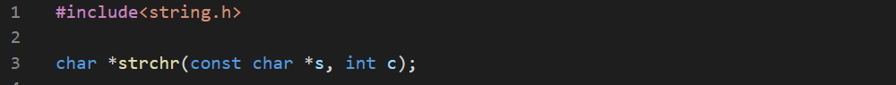

There's couple of function to work with strings. strchr() is the string version of memchr().

The strrchr() is the same as strchr() but works backwards.

But we can make it find a character everytime it occurs.


The strstr() function finds the first occurance of a substring in a string.

A simple program to find every occurance of a substring will be-


The strtok() function may look similar but it's more complex as it splits the string into tokens by delimiters. The function adds NULL characters at the ends of the tokens.

Now we'll write a program to remove all the punctuations of a string.


The array must be decalred as, hamlet[] as it allocates writable memory.